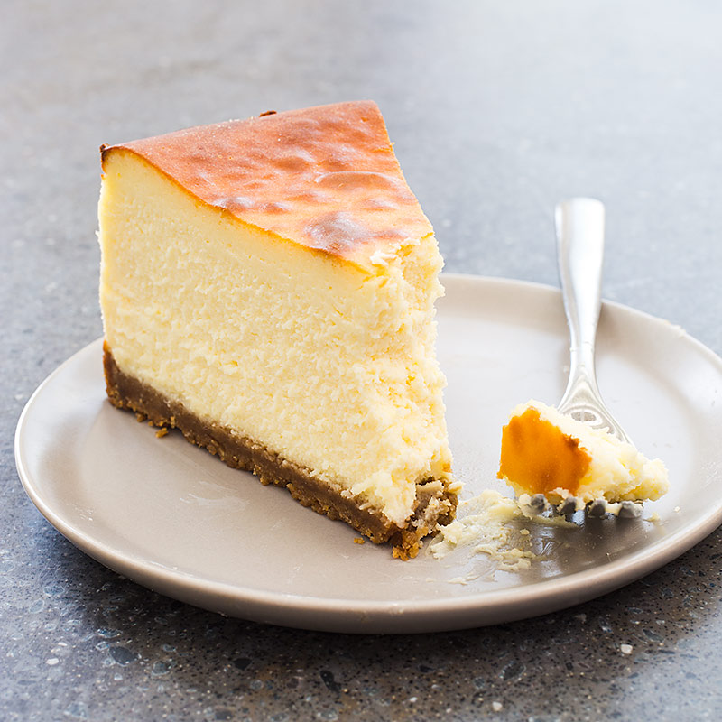

Super Simplified Cheesecake

HERE IT IS
tarte portion:
- egg yolk - 1
- sugar - 40g
- flour - 120g
- preheat oven to 350 F
- put in food processor
- in a cake pan, press the mix tocreate a crust
bake at 350 F for 10 min
filling portion:
- heavy cream — 1 cup
- 2 eggs
- cream cheese - 1 pack
- flour - 3 TBSP
- sugar - 2/3 cup
- lemon juice - 1TBSP
- put in food processor
- pour onto crust
- bake at 350 F for about 30 min. time will depend on oven strength.
A Better Cheesecake Recipe